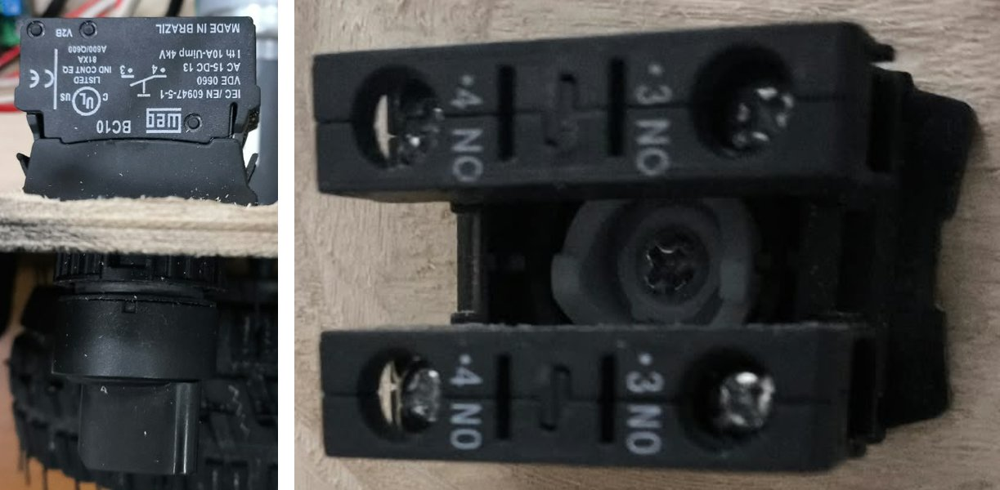

Figura 1. Tabla del vendedor del 42GM-895H. Se eligió la reducción 189:1 (columna de 53 rpm) a 12 V.

Figura 2. Tabla del vendedor del 36-555 a 12 V. J1 usa la reducción 50:1 (160 rpm); J2 y J3, la 139:1 (58 rpm).

Figura 3. Servo RDS3218 de 20 kg·cm usado en la pinza (apertura y giro J4).

Figura 4. Soporte del motor de tracción fijado a la base (Entrega 3).

Figura 5. Motores, drivers y buck fijados a la base (Entrega 3).

Figura 6. Los tres IBT-2 del brazo, uno por articulación.

Figura 7. Motor de J2 (hombro) en la base del brazo (marcado en verde).

Figura 8. Motor de J3 y su cableado (marcado en azul).

Figura 9. Transmisión del codo (J3) por el cuatro barras (marcado en violeta).

Figura 10. Brazo montado sobre la base, en la posición de cero de J1 (hacia el costado izquierdo), durante la prueba de lazo cerrado de J1.

Figura 11. Conexionado general v0.6, con los GPIO de cada placa. En trazo cortado, lo que queda fuera de la prueba integrada mínima.

Figura 12. Lazos de control de una articulación del brazo (arriba) y de la tracción diferencial (abajo).

Figura 13. Autonomía estimada por fuente y escenario, frente al mínimo de 45 minutos de la guía.

Figura 14. LiPo Zeee 3S de 8000 mAh (motores).

Figura 15. Dimensiones de la LiPo: 138 × 47 × 36 mm, 493 g.

Figura 16. Power bank Xiaomi PB2030MI (Pi 5 y ESP32).

Figura 17. Circuito de potencia v0.6: LiPo directa al bus de 12 V de motores, protegida por un fusible de auto de 20 A, y power bank para la lógica, unidos solo por el GND.

Figura 18. Selector WEG con dos contactos NA (bloques BC10) en paralelo: interruptor ON/OFF de los motores (la protección es el fusible).

Figura 19. Buck XL4016 (buck 3): 12 → 6 V para los servos.

Figura 20. Indicador de barras para baterías de litio de 1S a 8S, en el balanceo de la LiPo.